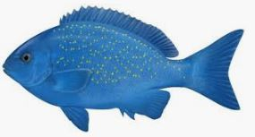

Bluefish
The bluefish (Pomatomus saltatrix) is the only extant species of the family Pomatomidae.
It is a marine pelagic fish found around the world in temperate and subtropical waters,
except for the northern Pacific Ocean. ... The bluefish is a moderately proportioned fish,
with a broad, forked tail.